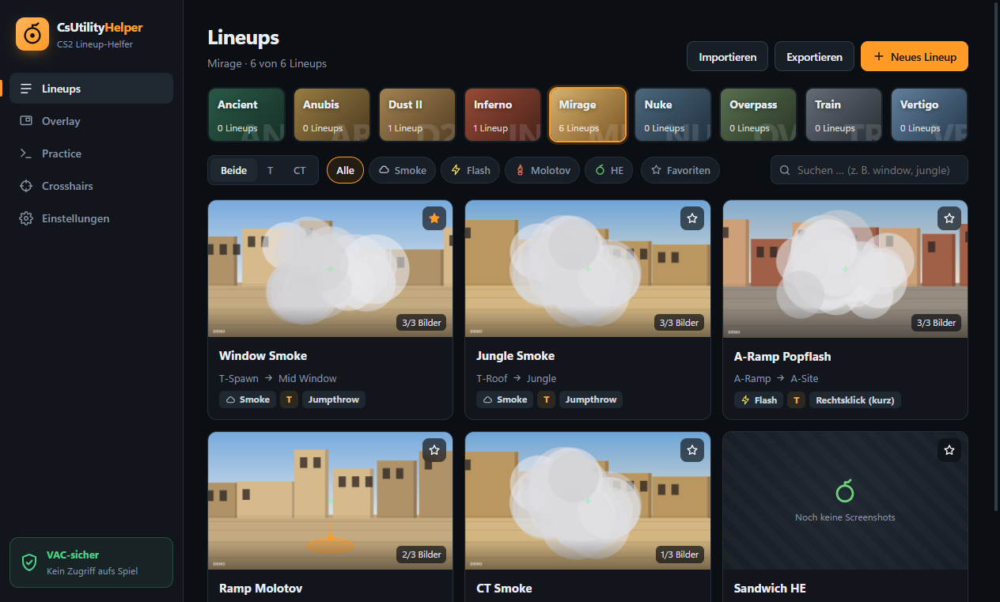
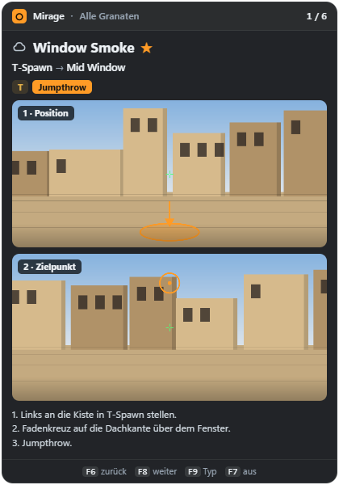
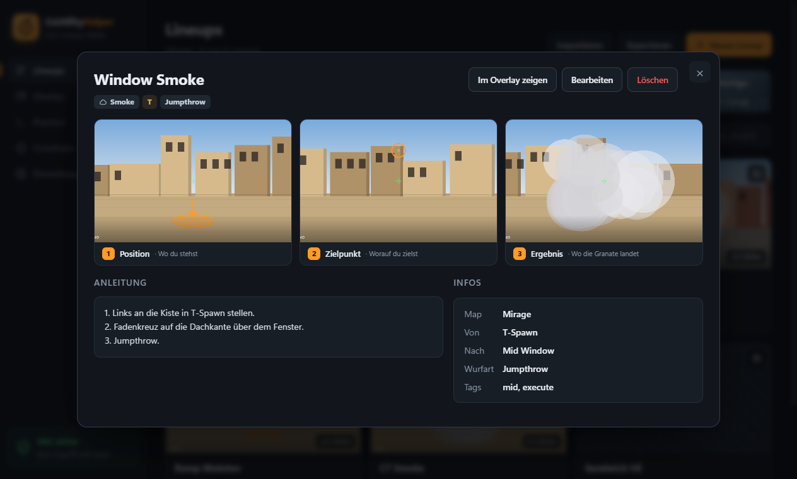

Version 1.0 · Kostenlos
Jede Smoke.
Jede Smoke.
Jedes Mal.
Speicher deine CS2-Lineups mit Screenshots von Position, Zielpunkt und Ergebnis. Im Spiel blendest du sie per Hotkey ein.
VAC-sicher: kein Zugriff auf das Spiel, keine Injection


Ein kurzer Blick rein

Drei Bilder pro Lineup: wo du stehst, worauf du zielst und wo die Granate landet. Dazu Wurfart und Anleitung.
Screenshots in Sekunden
Im Spiel F12 drücken, in der App Strg+V. Fertig.
Overlay per Hotkey
Mit F7 blendest du das Overlay ein, mit F8 springst du zum nächsten Lineup. Das Spiel bleibt im Fokus.
Practice mit einem Klick
Die App legt eine fertige practice.cfg in deinen CS2-Ordner. Im Spiel tippst du dann nur exec practice.
Bereit für die nächste Runde?
Kostenlos. Kein Account. Deine Lineups bleiben auf deinem PC.
CsUtilityHelper herunterladenWindows zeigt „Der Computer wurde durch Windows geschützt“?
Das kommt, weil die App neu ist und noch kein gekauftes Code-Zertifikat hat. Klick auf Weitere Informationen und dann auf Trotzdem ausführen.